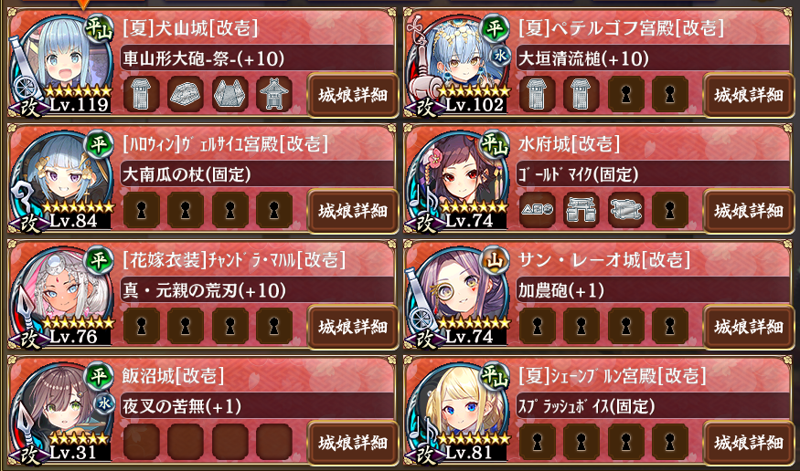
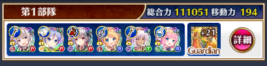
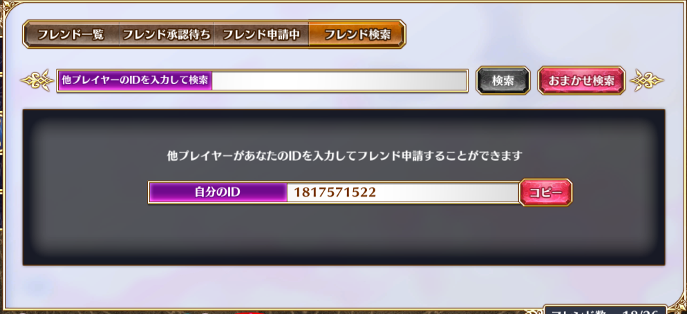
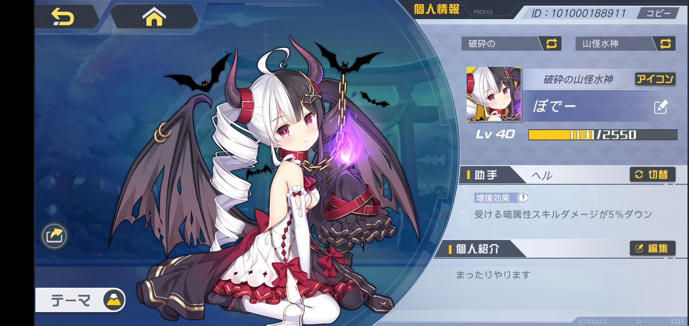
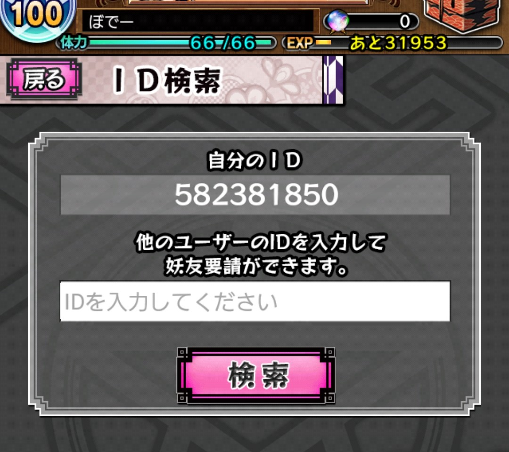
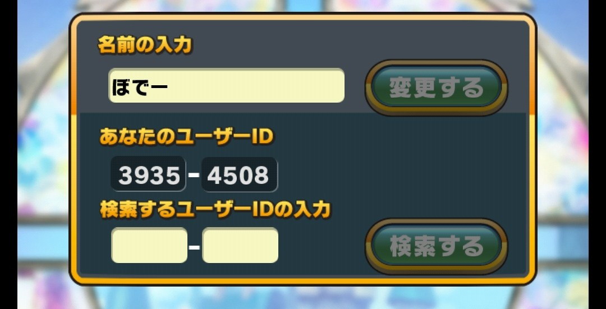

About
ぼでーの自己紹介ページです
やってるゲームのフレコとかは全てここに書いてます
エンジニアやってるんですがサイトデザイン下手くそなので不便かも
とにかく和服と可愛いものが好き。好みは幼い見た目になりがち
アイマス/シンデレラ
アイマスの活動は現在シンデレラガールズのみやってます
櫻井桃華、春霞（浜口あやめ、小早川紗枝、道明寺歌鈴、依田芳乃、脇山珠美）の計六人を担当
気になるアイドルはいっぱい
自分のやりたいことをやれる時にやってるだけです
マイペースでやってるので知らないネタやついていけないことがたくさんあります
デレステとモバのIDは以下
各画像をクリックでIDをコピーできます


御城プロジェクト:RE～CASTLE DEFENSE～
のんびりとやってます。Android版でやってましたが、今はDMM版に引き継いでDMM版でやってます
アイコン見て一目惚れした犬山城が一発で来てくれたのとタワーディフェンスが面白くてドハマリ
彦根城のリアルイベントは行きました
肝心のリアルお城の知識は人並みかそれ以下。歴史が苦手なのでこれから勉強します
推しは以下の画像の通り

ペテルゴフ宮殿彼女にしたい
ジェミニシード
もちろん(?)DMM X版でやってます
テッサが推しだったけどトワルルが来てからの鞍替えは俊足の翁
(ベッドシーンがマジで犯罪)
キャラ性とストーリー、運営がメタで遊んでたりしてるのも平和で楽しい
重めのストーリーは、オタクを幾度となく泣かせた。アンジェリカ……
マリナの「魚が逃げてる」と「やりました！やったんでちよ！必死に！」はマジで定期的に聞きたくなるよな
IDやメインの編成は以下の通り
IDの画像はクリックでIDをコピーできます


アークオーダー
事前登録してリリースされた通知を忘れててリリース後一週間目から始めました
魑魅魍魎姉妹とヘルちゃんが全てのモチベーション、可愛い
本家wikiで一目惚れした八咫烏ちゃんが来るまでは、とりあえず真面目にやると思います
スルメゲーなので細々続けるかなぁ
フレコはこちらです 画像クリックでIDをコピーできます

妖怪百姫たん！
和服ロリがほしい。その欲求のみで始めたゲームです
座敷童子と小豆洗いあたりが好き。このゲーム性癖って感じする
そんなに真面目にはやってません。やりたい時にやりたいだけやってます
画像クリックでIDをコピーできます

ウチ姫
友達に誘われて一番最初にやったソシャゲですね
人生で一番最初に真剣にランカーしたゲームでもあります。全3位はいい思い出
今では半分引退勢です。このゲームいつになったらガチャがもう少し優しくなるんだ
推しは花咲 恵ちゃん
画像クリックでIDをコピーできます

その他のゲーム達
雑食なのでいろんなソシャゲをやってます
スタリラ、グラブル、きらファン、プリコネR、あやらぶ
ログイン勢なのでフレコなどはのせてません
もし知りたい方がいれば声をかけてくださいまし
ぷよぐやみんぐ
When 14 years old, I started prgramming life with VBS.
Perl, C++, Elixir, Rust, JavaScript, PHP, Java, OCaml, Haxe... and more
最近はもっぱらRust、Elixir、Haxeにお熱
コードを書くことに性的快感を感じる
趣味・音楽
神社や自然が織りなす景色、街並みや道が好きなので昼夜問わず散歩によくいきます
ぼでーの神社探訪
あまり怖い事を恐れないので一人でガンガン夜の街を歩いたりしますが、幽霊より結局人のが怖いです
可愛いものが大好きなのでちょっとしたコンテンツとかなんか良くわからないキャラとかにもセンサーは反応します
和服が好きなので和服だったら何であろうととりあえず視界に入れる癖がある
音楽の趣味はブレブレ
GabberからのHardcore、Hardstyleを主に好み、ダンスミュージック以外なら
和楽器バンドを中心として色々聴く。和楽器とか和風なものがここでもやっぱり好き
「ワタシ、至上主義」をぜひとも一度聴いてほしい
お祭りが好き。花火も好き。桜とか蛍とか、マジでその時限定でしか見れないものにとても惹かれる
YoutubeはM.S.S ProjectとQuizKnockしか最近は見てないや